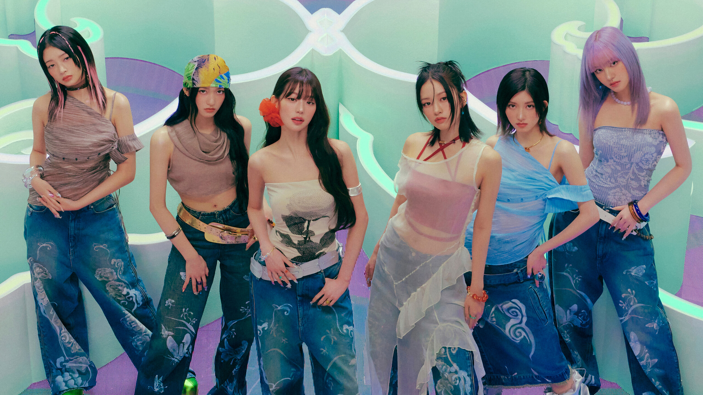

Hebohkan Penggemar, Agensi Konfirmasi IVE Akan Comeback pada Januari 2025 Mendatang

Starship Entertainment selaku agensi mengonfirmasi persiapan comeback girl group IVE yang direncanakan pada Januari 2025.
Kabar terkait comeback mendatang disampaikan bertepatan ketika IVE tengah merayakan ulang tahun debut ke-3 pada 1 Desember.
"IVE, yang merayakan ulang tahun ke-3 debutnya hari ini, sedang mempersiapkan album baru untuk comeback pada bulan Januari sebagai bagian pertama Starship 2025," ungkap Starship Entertainment, dilansir dari Naver pada Senin (2/12).
"Kami meminta banyak dukungan untuk IVE yang akan melangkah maju sekali lagi dengan penampilan yang lebih matang melalui tur dunia tahun ini," sambung agensi.
Comeback ini juga menandai album terbaru IVE sejak terakhir kali merilis mini album kedua bertajuk IVE SWITCH pada sembilan bulan lalu atau tepatnya di bulan April 2024.